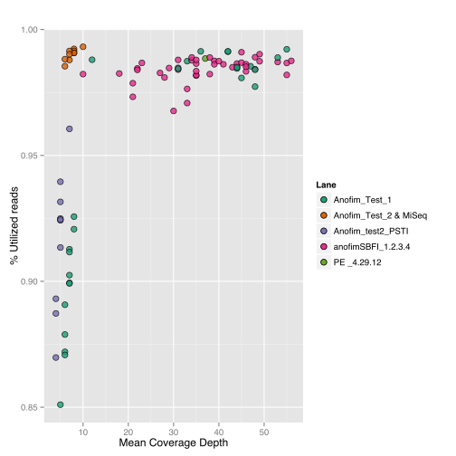
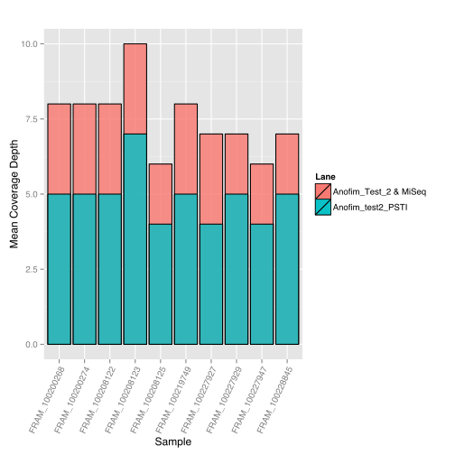

#load reqired packages
library("ggplot2")
library("reshape2")
library("scales")
library("RColorBrewer")
#__Set the working directory__
#setwd("~/Desktop/bgidata")
setwd("~/Dropbox-GoetzLab/Dropbox/Public/Andy/knitr Documents/bgidata_quality_assesment_2.26.14")
#__Read in the data that I extracted from process_radtags log files. "melt" the data frames so that they can be plotted in ggplot__
#list.files()
Anofim_BGI_1.fq.gz.barcode.stats <- read.delim("BGI_Run_CleanedReads/Anofim_BGI_1.fq.gz.barcode.stats")
Anofim_BGI_2.fq.gz.barcode.stats <- read.delim("BGI_Run_CleanedReads/Anofim_BGI_2.fq.gz.barcode.stats")
Anofim_BGI_3.fq.gz.barcode.stats <- read.delim("BGI_Run_CleanedReads/Anofim_BGI_3.fq.gz.barcode.stats")
Anofim_BGI_4.fq.gz.barcode.stats <- read.delim("BGI_Run_CleanedReads/Anofim_BGI_4.fq.gz.barcode.stats")
Anofim_BGI_5.fq.gz.barcode.stats <- read.delim("BGI_Run_CleanedReads/Anofim_BGI_5.fq.gz.barcode.stats")
Anofim_BGI_6.fq.gz.barcode.stats <- read.delim("BGI_Run_CleanedReads/Anofim_BGI_6.fq.gz.barcode.stats")
Anofim_BGI_7.fq.gz.barcode.stats <- read.delim("BGI_Run_CleanedReads/Anofim_BGI_7.fq.gz.barcode.stats")
Anofim_test1_SBFI.barcode.stats <- read.delim("Previous_Runs/Anofim_test1_SBFI.barcode.stats")
Anofim_test1_PSTI.barcode.stats <- read.delim("Previous_Runs/Anofim_test1_PSTI.barcode.stats")
Anofim_test2.barcode.stats <- read.delim("Previous_Runs/Anofim_test2.barcode.stats")
AnofimSBFI_1.2.3.4.barcode.stats <- read.delim("Previous_Runs/AnofimSBFI_1.2.3.4.barcode.stats")
miSeqRun1.barcode.stats <- read.delim("Previous_Runs/miSeqRun1.barcode.stats")
miSeqRun2.barcode.stats <- read.delim("Previous_Runs/miSeqRun2.barcode.stats")
#raw reads
Anofim_BGI_1.Raw <- read.delim("BGI_Run_RawReads/1.barcode.stats")
Anofim_BGI_2.Raw <- read.delim("BGI_Run_RawReads/2.barcode.stats")
Anofim_BGI_3.Raw <- read.delim("BGI_Run_RawReads/3.barcode.stats")
Anofim_BGI_4.Raw <- read.delim("BGI_Run_RawReads/4.barcode.stats")
Anofim_BGI_5.Raw <- read.delim("BGI_Run_RawReads/5.barcode.stats")
Anofim_BGI_6.Raw <- read.delim("BGI_Run_RawReads/6.barcode.stats")
Anofim_BGI_7.Raw <- read.delim("BGI_Run_RawReads/7.barcode.stats")
raw.lane.stats <- read.delim("BGI_Run_RawReads/lane.stats")
lane.stats <- read.delim("BGI_Run_CleanedReads/lane.stats")
prev.lane.stats <- read.delim("Previous_Runs/prev.lane.stats",col.names=names(lane.stats))
lane.stats <- rbind(raw.lane.stats,lane.stats,prev.lane.stats)
#melt the dataframes
Anofim_BGI_1.fq.gz.barcode.stats <- melt(Anofim_BGI_1.fq.gz.barcode.stats,id.vars=1,measure.vars=c(5:3))
Anofim_BGI_2.fq.gz.barcode.stats <- melt(Anofim_BGI_2.fq.gz.barcode.stats,id.vars=1,measure.vars=c(5:3))
Anofim_BGI_3.fq.gz.barcode.stats <- melt(Anofim_BGI_3.fq.gz.barcode.stats,id.vars=1,measure.vars=c(5:3))
Anofim_BGI_4.fq.gz.barcode.stats <- melt(Anofim_BGI_4.fq.gz.barcode.stats,id.vars=1,measure.vars=c(5:3))
Anofim_BGI_5.fq.gz.barcode.stats <- melt(Anofim_BGI_5.fq.gz.barcode.stats,id.vars=1,measure.vars=c(5:3))
Anofim_BGI_6.fq.gz.barcode.stats <- melt(Anofim_BGI_6.fq.gz.barcode.stats,id.vars=1,measure.vars=c(5:3))
Anofim_BGI_7.fq.gz.barcode.stats <- melt(Anofim_BGI_7.fq.gz.barcode.stats,id.vars=1,measure.vars=c(5:3))
Anofim_test1_PSTI.barcode.stats <- melt(Anofim_test1_PSTI.barcode.stats,id.vars=1,measure.vars=c(5:3))
Anofim_test1_SBFI.barcode.stats <- melt(Anofim_test1_SBFI.barcode.stats,id.vars=1,measure.vars=c(5:3))
Anofim_test2.barcode.stats <- melt(Anofim_test2.barcode.stats,id.vars=1,measure.vars=c(5:3))
AnofimSBFI_1.2.3.4.barcode.stats <- melt(AnofimSBFI_1.2.3.4.barcode.stats,id.vars=1,measure.vars=c(5:3))
miSeqRun1.barcode.stats <- melt(miSeqRun1.barcode.stats,id.vars=1,measure.vars=c(5:3))
miSeqRun2.barcode.stats <- melt(miSeqRun2.barcode.stats,id.vars=1,measure.vars=c(5:3))
Anofim_BGI_1.Raw <- melt(Anofim_BGI_1.Raw,id.vars=1,measure.vars=c(5:3))
Anofim_BGI_2.Raw <- melt(Anofim_BGI_2.Raw,id.vars=1,measure.vars=c(5:3))
Anofim_BGI_3.Raw <- melt(Anofim_BGI_3.Raw,id.vars=1,measure.vars=c(5:3))
Anofim_BGI_4.Raw <- melt(Anofim_BGI_4.Raw,id.vars=1,measure.vars=c(5:3))
Anofim_BGI_5.Raw <- melt(Anofim_BGI_5.Raw,id.vars=1,measure.vars=c(5:3))
Anofim_BGI_6.Raw <- melt(Anofim_BGI_6.Raw,id.vars=1,measure.vars=c(5:3))
Anofim_BGI_7.Raw <- melt(Anofim_BGI_7.Raw,id.vars=1,measure.vars=c(5:3))
lane.stats <- melt(lane.stats,id.vars=1,measure.vars=c(2:5))
Lane performance
## Error in eval(expr, envir, enclos): object 'Tile' not found
Barcode stats for BGI run
## Warning: Removed 1 rows containing missing values (position_stack).
## Warning: Removed 1 rows containing missing values (position_stack).
Barcode stats for the hiSeq runs at University of Oregon
Barcode stats for miSeq runs
ggplot() + geom_bar(data = miSeqRun1.barcode.stats, aes(x=Barcode,y=value,fill=variable),color="#444546",stat="identity") +
theme(axis.text.x=element_text(angle=90)) +
scale_fill_manual(values=c("#397486","#192730","#D94B57")) +
scale_y_continuous(labels = comma,limits=c(0,8000000)) +
labs(title="Lane - miSeqRun1 - KMNJHrun_S1 ",y="Number of Reads")
ggplot() + geom_bar(data = miSeqRun2.barcode.stats, aes(x=Barcode,y=value,fill=variable),color="#444546",stat="identity") +
theme(axis.text.x=element_text(angle=90)) +
scale_fill_manual(values=c("#397486","#192730","#D94B57")) +
scale_y_continuous(labels = comma,limits=c(0,8000000)) +
labs(title="Lane - miSeqRun2 - sablefishPstI1",y="Number of Reads")
Plot of the values for read depth vs percent utilized reads
prev.ustacks.stats <- read.delim("Previous_Runs/prev.ustacks.stats.txt")
cleaned.ustacks.stats <- read.delim("BGI_Run_CleanedReads/ustacks.stats.txt")
raw.ustacks.stats <- read.delim("BGI_Run_RawReads/ustacks.stats.txt")
PE.pt.labs <- prev.ustacks.stats[prev.ustacks.stats$Lane=="PE_Run_PSTI",]
ggplot() + geom_point(data=prev.ustacks.stats,aes(x=Mean.Coverage.Depth,y=PercentUtilized,fill=Lane),pch=21,color="black",size=3,alpha=0.8) +
scale_fill_brewer(palette="Dark2") +
labs(title="Runs at University of Oregon",x="Mean Coverage Depth",y="% Utilized reads") +
geom_text(data=PE.pt.labs,aes(x=Mean.Coverage.Depth,y=PercentUtilized,label=Sample),angle=-45,hjust=0, vjust=0.5,size=4,position="dodge")
ggplot() + geom_point(data=cleaned.ustacks.stats,aes(x=Mean.Coverage.Depth,y=PercentUtilized,fill=Lane),pch=21,color="black",size=3,alpha=0.8) +
scale_fill_brewer(palette="Dark2") +
labs(title="BGI - 'Cleaned' Reads",x="Mean Coverage Depth",y="% Utilized reads")
ggplot() + geom_point(data=raw.ustacks.stats,aes(x=Mean.Coverage.Depth,y=PercentUtilized,fill=Lane),pch=21,color="black",size=3,alpha=0.8) +
scale_fill_brewer(palette="Dark2") +
labs(title="BGI - Raw Reads",x="Mean Coverage Depth",y="% Utilized reads")
looks like lane #2 from BGI didn't really perform very well, but the others seem to look good. This may resolve itself if it had something to do with how BGI processed the run.
Comparing with the depth of the samples sequenced for the paired end library because they were sequenced at sufficient depth.
Anofim_test2.barcode.stats <- read.delim("Previous_Runs/Anofim_test2.barcode.stats")
miSeqRun1.barcode.stats <- read.delim("Previous_Runs/miSeqRun1.barcode.stats")
miSeqRun2.barcode.stats <- read.delim("Previous_Runs/miSeqRun2.barcode.stats")
miSeqCombined <- merge(miSeqRun1.barcode.stats,miSeqRun2.barcode.stats, by="Barcode")
Total <- apply(miSeqCombined[,c(2,6)],1,sum)
No.RadTag <- apply(miSeqCombined[,c(3,7)],1,sum)
Low.Quality <- apply(miSeqCombined[,c(4,8)],1,sum)
Retained <- apply(miSeqCombined[,c(5,9)],1,sum)
Barcode <- as.character(miSeqCombined$Barcode)
miSeqCombined <- data.frame(cbind(Barcode,Total,No.RadTag,Low.Quality,Retained))
miSeqCombined[,2] <- as.numeric(as.character(miSeqCombined[,2]))
miSeqCombined[,3] <- as.numeric(as.character(miSeqCombined[,3]))
miSeqCombined[,4] <- as.numeric(as.character(miSeqCombined[,4]))
miSeqCombined[,5] <- as.numeric(as.character(miSeqCombined[,5]))
miSeqCombined <- merge(miSeqCombined,Anofim_test2.barcode.stats, by="Barcode")
Total <- apply(miSeqCombined[,c(2,6)],1,sum)
No.RadTag <- apply(miSeqCombined[,c(3,7)],1,sum)
Low.Quality <- apply(miSeqCombined[,c(4,8)],1,sum)
Retained <- apply(miSeqCombined[,c(5,9)],1,sum)
Barcode <- as.character(miSeqCombined$Barcode)
miSeqCombined <- data.frame(cbind(Barcode,Total,No.RadTag,Low.Quality,Retained))
miSeqCombined.barcode.stats <- melt(miSeqCombined,id.vars=1,measure.vars=c(5:3))
## Warning: attributes are not identical across measure variables; they will
## be dropped
miSeqCombined.barcode.stats$value <- as.numeric(miSeqCombined.barcode.stats$value)
PE.barcode.stats <- read.delim("Previous_Runs/PE.barcode.stats")
## Warning in read.table(file = file, header = header, sep = sep, quote =
## quote, : incomplete final line found by readTableHeader on
## 'Previous_Runs/PE.barcode.stats'
PE.barcode.stats <- melt(PE.barcode.stats,id.vars=1,measure.vars=c(5:3))
It appears that we might have to sequence at much greater depth to actually get useable data from the pstI samples
When samples sequenced more than once are combined into a single file, namely the miSeq runs combined with Anofim_Test2 
comb.ustacks.stats <- read.delim("Previous_Runs/comb.ustacks.txt")
comb.ustacks.stats <- comb.ustacks.stats[comb.ustacks.stats$Lane!="Combined",]
comb.ustacks.stats <- comb.ustacks.stats[comb.ustacks.stats$Lane!="Anofim_Test_1",]
comb.ustacks.stats <- comb.ustacks.stats[comb.ustacks.stats$Lane!="Anofim_Test_2",]
comb.ustacks.stats <- comb.ustacks.stats[comb.ustacks.stats$Lane!="Anofim_Test_2 & MiSeq",]
comb.ustacks.stats <- comb.ustacks.stats[comb.ustacks.stats$Lane!="PE_4.29.12",]
comb.ustacks.stats <- comb.ustacks.stats
ggplot() + geom_point(data=comb.ustacks.stats,aes(x=Total.Reads,y=Mean.Coverage.Depth,fill=Lane),stat="identity",pch=21,color="black",alpha=0.8)
mean.reads.lane <- mean(c(prev.lane.stats[c(1,5,6),6],raw.lane.stats[c(1,3,4,5,6,7),6]))
mean.reads.lane / mean(comb.ustacks.stats[comb.ustacks.stats$Mean.Coverage.Depth==25,4])
## [1] 86.22766
mean.reads.lane / mean(comb.ustacks.stats[comb.ustacks.stats$Mean.Coverage.Depth==20,4])
## [1] 115.9562
mean.reads.lane / mean(comb.ustacks.stats[comb.ustacks.stats$Mean.Coverage.Depth==10,4])
## [1] 255.1679